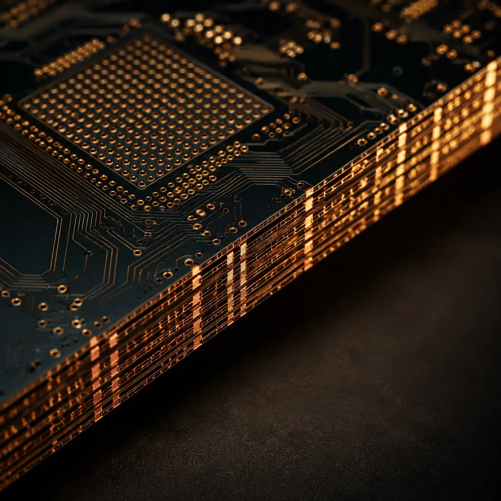
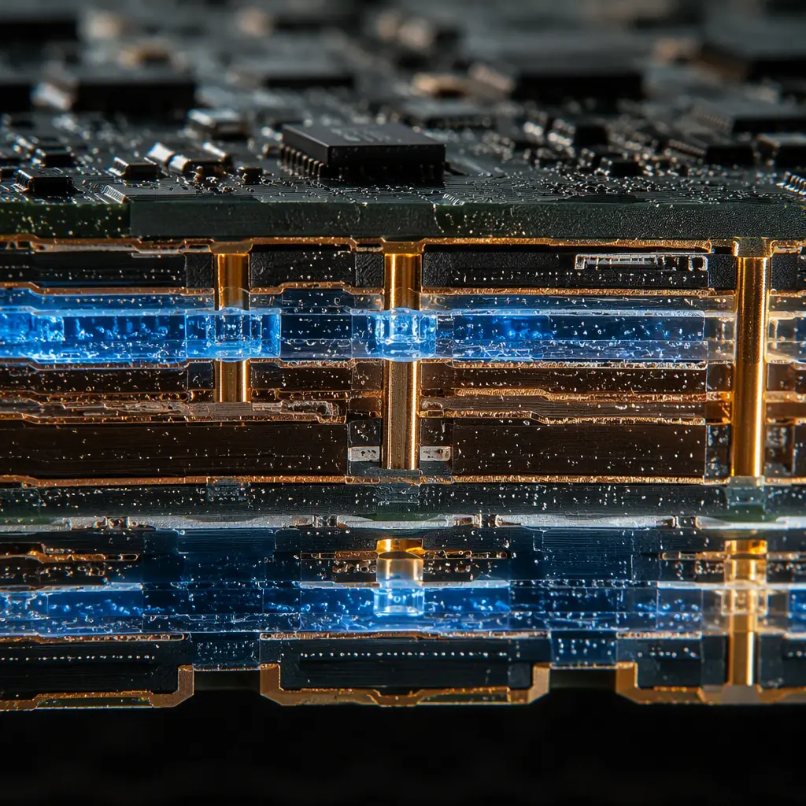

Every PCB designer knows the frustration: your layout is perfect, but 40-60% of your board area is consumed by passive components — decoupling capacitors, termination resistors, pull-up networks. On a dense HDI board, passives can outnumber active ICs 10 to 1. Embedded passive technology moves these components inside the PCB substrate itself, freeing surface space for more functional circuitry while improving electrical performance. But the manufacturing process is fundamentally different from standard multilayer fabrication — and not every design benefits.
At Huaxing PCBA, our 32-layer HDI capability and 3/3 mil trace/space precision enable embedded passive manufacturing for aerospace, medical implant, and 5G infrastructure applications. Here's what PCB designers and procurement managers need to know before specifying buried capacitance or embedded resistors in their next stackup.

What Are Embedded Passives? Three Technology Categories
Embedded passives fall into three distinct manufacturing approaches, each with different materials, processes, and cost implications:
| Technology | What It Replaces | How It's Built | Typical Density Gain |
|---|---|---|---|
| Planar Capacitance | Decoupling capacitors (0201–0805) | Thin dielectric laminate (8–25μm) between power/ground planes | Eliminates 60-80% of decoupling caps |
| Buried Resistors | Termination, pull-up/down, series resistors | Thin-film resistive foil (NiP, NiCr) laminated and etched into internal layers | Eliminates 30-50% of discrete resistors |
| Embedded Inductors | RF chokes, filter inductors | Spiral patterns etched on internal layers using ferrite-filled substrates | Application-specific (RF front-ends) |
Key Takeaway: Planar capacitance is the most mature and cost-effective embedded passive technology — it's been in volume production for over 15 years in smartphones and servers. Buried resistors are gaining traction in automotive and medical. Embedded inductors remain niche (RF/microwave only).
Planar Capacitance: Eliminating Decoupling Caps Layer by Layer
The fundamental problem with discrete decoupling capacitors is parasitic inductance. An 0402 capacitor might have 0.5–1.0 nH of equivalent series inductance (ESL) from its mounting structure alone — traces, vias, and pad geometry. At frequencies above 100 MHz, that inductance dominates, and the capacitor stops behaving like a capacitor. The result: your simulation says the PDN impedance is fine, but your board fails EMI compliance.
Planar capacitance solves this by replacing discrete capacitors with an ultra-thin dielectric layer (8–25 μm) sandwiched between power and ground planes. Because the "capacitor" is distributed across the entire plane pair — with essentially zero lead inductance — it provides effective decoupling up to several GHz. This is why every smartphone motherboard and server CPU substrate uses embedded planar capacitance: no discrete capacitor technology can match its high-frequency impedance profile.
Materials matter enormously here. Standard FR-4 has a dielectric constant (Dk) around 4.2–4.5 and a minimum practical thickness of 100 μm (4 mil) for reliable lamination. Planar capacitance laminates use materials like 3M C-Ply or Oak-Mitsui FaradFlex with Dk values from 4 to 16+ and thicknesses down to 8 μm. The capacitance density ranges from 0.2 nF/cm² (standard FR-4 at 100 μm) to over 10 nF/cm² (high-Dk thin film at 8 μm). At 10 nF/cm², a 10 cm × 10 cm board segment provides 1,000 nF of distributed decoupling — equivalent to dozens of discrete capacitors, with far lower ESL.

Buried Resistors: Thin-Film Precision Inside the PCB
Buried resistor technology embeds a thin layer of resistive material — typically nickel-phosphorus (NiP) at 25–250 Ω/sq or nickel-chromium (NiCr) at 50–250 Ω/sq — between laminate layers. After lamination, the resistive foil is photolithographically patterned and etched to create individual resistors, then covered by the next prepreg layer. The result: resistors that exist entirely within the PCB, with no solder joints, no tombstoning risk, and no assembly labor.
The electrical advantages are significant. Buried resistors eliminate the parasitic inductance of vias and solder pads — typically 0.5–1.5 nH per termination. For high-speed series terminations at 10 Gbps+, that inductance causes impedance discontinuities that degrade eye diagrams. By placing the termination resistor directly at the receiver input pad — inside the PCB, not on the surface — you eliminate the stub that ruins signal integrity. For more on high-speed design, see our PCB signal integrity guide.
Resistance tolerance is the critical specification. As-etched NiP resistors typically achieve ±10–15% without trimming. For precision applications (±5% or better), laser trimming is required — a post-etch process that adds cost but achieves tolerances down to ±1%. For pull-up/pull-down and series termination applications, ±10–15% is usually sufficient. For reference voltage dividers or gain-setting networks, specify laser-trimmed to ±5% or use discrete thin-film chip resistors instead.
Cost Analysis: When Do Embedded Passives Make Financial Sense?
This is the question that determines whether your design uses embedded passives or stays with discrete SMD. The cost equation has three components:
PCB Fabrication Cost Increase
Adding a planar capacitance layer increases the layer count by 2 (dedicated power/ground pair with thin dielectric). A 10-layer board becomes a 12-layer board. At approximately $2–4 per layer per sq. inch in volume, this adds $4–8/sq. inch. Buried resistor foil adds $3–6/sq. inch depending on material (NiP is cheaper than NiCr). For a 100 cm² board, expect a $60–120 fabrication cost increase for planar capacitance, or $45–90 for buried resistors. Read our PCB cost factors breakdown for full pricing context.
Component & Assembly Cost Savings
Each discrete 0402 capacitor costs approximately $0.002–0.01 in volume, plus $0.001–0.003 placement cost. A board with 200 decoupling capacitors saves $0.60–2.60 per board in components and assembly. Buried resistors save even more: thin-film chip resistors cost $0.01–0.05 each in precision grades. Savings scale with volume — at 10,000 units, component and assembly savings can fully offset the fabrication cost increase.
Board Area Reduction & System-Level Savings
This is where embedded passives win even when the direct BOM comparison is neutral. Eliminating 200 capacitors and 100 resistors frees 3–6 cm² of board area. On a dense design, that can mean reducing the layer count (fewer routing layers needed), fitting into a smaller enclosure (cheaper housing, lower shipping weight), or adding features without growing the board. At the system level, a 10% board area reduction often saves far more than the embedded passive fabrication cost.
The break-even analysis typically favors embedded passives when your board has more than 150–200 discrete passives on a dense layout, operates above 500 MHz (where parasitic inductance matters), or has severe space constraints (wearables, implantables, smartphone-sized enclosures). For low-density, low-frequency designs, discrete SMD remains more cost-effective.
Design Rule: Don't embed every passive. Keep high-power resistors (above 100 mW dissipation), precision components (±1% or tighter), large-value capacitors (above 100 nF for decoupling, above 1 μF for bulk), and components that may need value changes during prototyping on the surface. Embed only what benefits from elimination of parasitic inductance or board space savings. Our mixed-signal PCB design guide covers partitioning strategies.
Manufacturing Challenges Unique to Embedded Passives
Embedded passive manufacturing introduces process steps that standard PCB fabrication doesn't require — and each step carries yield risks:
Resistive Foil Registration & Etching
Buried resistor foil must be registered to inner layer artwork with ±25–50 μm accuracy. Misregistration shifts resistor geometries, changing resistance values. After etching, every resistor on the panel must be electrically tested — a process that adds 30–60 minutes of test time per panel. Failed resistors cannot be reworked; the entire inner layer core is scrapped.
Thin Dielectric Handling & Lamination
Planar capacitance laminates at 8–25 μm thickness are fragile — they wrinkle, tear, or trap air bubbles during layup far more easily than standard 100 μm+ prepreg. A single air void between power and ground planes creates a potential short-circuit path. Lamination must be done in a Class 10,000 cleanroom with vacuum-assisted presses and carefully controlled heat ramps. For our lamination quality standards, see PCB laminate selection.
Via Interconnection to Embedded Layers
Connecting surface components to buried resistors requires blind vias that stop precisely on the resistive layer — not drill through it. This demands controlled-depth drilling or laser via technology with ±10 μm depth accuracy. A via drilled 5 μm too deep cuts the resistor trace and creates an open circuit. See our PCB via technology guide for blind/buried via capabilities.
Testing & Rework Limitations
Once laminated, embedded passives cannot be probed individually for troubleshooting. If a buried resistor drifts out of tolerance, the entire board is scrap — you cannot cut it out and solder a replacement. This makes first-pass yield critical. Designs should include 10–20% extra test coupons on the panel edge for destructive testing before committing production panels.
Applications Where Embedded Passives Are Already Standard
Embedded passives are not experimental technology. They are standard practice in several high-volume applications:
Smartphone Main Boards: Every iPhone and flagship Android phone since approximately 2014 uses planar capacitance in the processor power delivery network. The space saved by eliminating hundreds of decoupling caps is non-negotiable in a 7 mm thick device. Apple's latest A-series processor substrates use 4–6 layers of embedded passives.
Server CPU Substrates: AMD EPYC and Intel Xeon processor packages use embedded planar capacitance and buried resistors to manage the PDN impedance requirements of 200W+ processors switching at GHz speeds. Without embedded passives, the discrete capacitor count would exceed what can physically fit around the socket. Our data center server PCB guide covers related high-layer-count requirements.
Implantable Medical Devices: Pacemakers, neurostimulators, and cochlear implants use embedded passives to achieve the extreme miniaturization required for implantable form factors. The reliability advantage — no solder joints to fail inside a patient — is as important as the size reduction. These applications typically use IPC Class 3 manufacturing standards. See our medical device PCB manufacturing guide.
Design Checklist: Is Your Board Ready for Embedded Passives?
Before specifying embedded passives in your next design, verify these prerequisites:
1. Your board already uses HDI technology. Embedded passives require sequential lamination and laser microvias — the same process infrastructure as HDI. If you're designing a standard through-hole board with 6–8 layers, the manufacturing complexity jump is too large. Start with HDI first (HDI upgrade guide), then add embedded passives on the next revision.
2. Your passive count justifies the investment. Below approximately 150 discrete passives on a single board, the fabrication cost increase exceeds component and space savings. Run the numbers with your CM before committing.
3. Your signal frequencies exceed 500 MHz. Below this threshold, discrete capacitor ESL is not the dominant PDN impedance contributor, and the electrical benefit of planar capacitance is marginal.
4. Your production volume is above 5,000 units/year. At prototype volumes (50–500 units), the NRE for resistive foil tooling and test fixture development makes embedded passives uneconomical. Our low-volume assembly guide covers alternatives for smaller runs.
At Huaxing PCBA, we manufacture embedded passive PCBs for applications ranging from 5G mmWave antenna arrays to implantable neurostimulators. Our 32-layer capability with 3/3 mil trace/space, laser microvias, and in-house impedance TDR testing provides the precision manufacturing that embedded passive technology demands. Contact our engineering team with your stackup requirements for a feasibility assessment and quote.